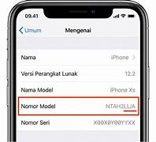
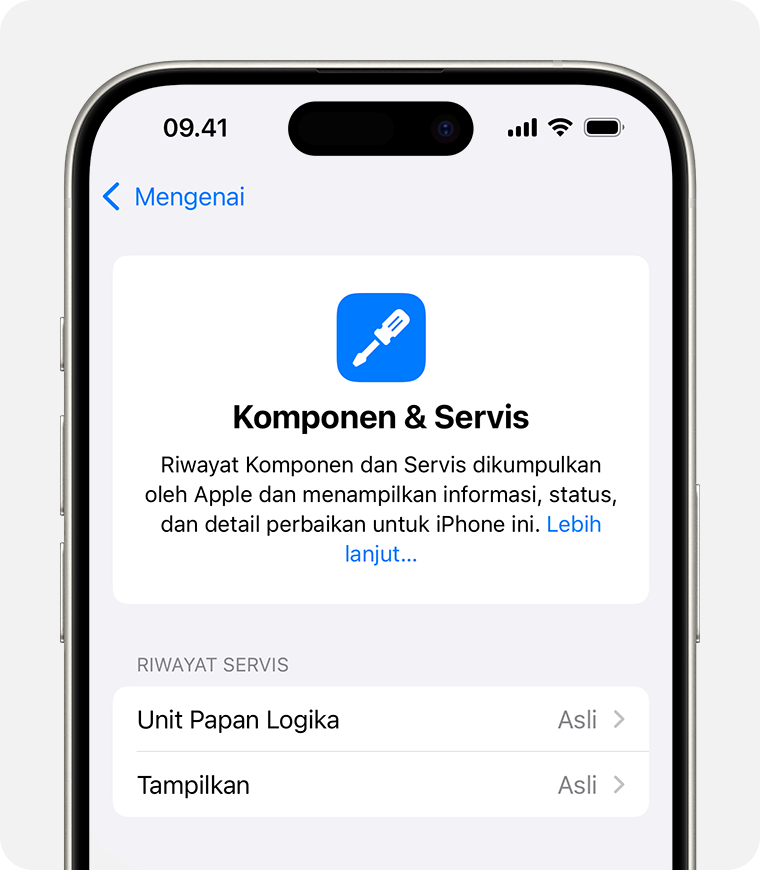
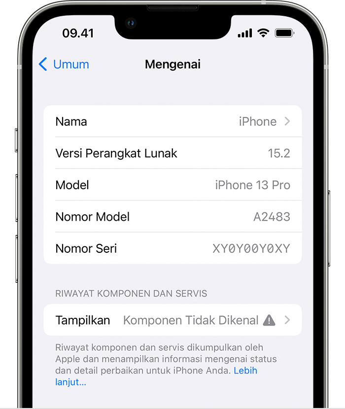

Ini adalah contoh website sederhana dengan HTML dan CSS.
Website ini dibuat untuk mengedukasi dengan singkat bagaimana cara mengecek device iphone second Garansi Resmi
(ID/A, PA/A, SA/A) ataupun non garansi resmi (LL/A, ZP/A, CH/A, dll..), Dan basic pengecekan pada unit tersebut.
Langkah-langkahnya adalah sebagai berikut:
Cara Cek Garansi Resmi iPhone SEIN atau Non Resmi
Buka aplikasi "Pengaturan" di iPhone Anda.
Gulir ke bawah dan ketuk "Umum".
Pilih Opsi "Mengenai".
Lihat pada tulisan Nomor Model tepatnya pada dibagian atas nomor seri pada device anda
Perhatikan pada 3 huruf terakhir dari kode model tersebut:
Jika huruf terakhir adalah (ID/A, PA/A, SA/A), itu menandakan Garansi SEIN Resmi Indonesia (IBOX, BLIBLI, ).
Jika huruf terakhir adalah selain yang 3 kode angka terakhir tadi (ZP/A, CH/A, LL/A, dll..),
itu menandakan Non Garansi Resmi SEIN dan termasuk dalam Garansi Internasional
(Bisa klaim garansi pada Negara sesuai pada kode kode tersebut).
Contoh kode iphone garansi NON resmi indonesia:

Contoh kode iphone garansi RESMI indonesia(SEIN):
Note: Untuk Nomor model, Baterai healt, 3Utools mudah untuk dimanipulasi oleh para seller Nakal diluar sana
Cara Cek Keaslian Screen LCD pada device
Buka aplikasi "Pengaturan" di iPhone Anda.
Gulir ke bawah dan ketuk "Umum".
Pilih Opsi "Mengenai".
Jika muncul Lihat pada tulisan (Komponen service) tepatnya pada dibagian bawah nomor model pada device anda
Perhatikan pada tulisan tersebut:
Jika tidak muncul tulisan (Komponen service), itu menandakan layar LCD dan komponen komponen lainnya masih
Original bawaan pabrik dari Apple.
Jika tertulis "Layar Asli Apple", itu menandakan layar LCD Original bawaan pabrik dari Apple.
Jika tertulis PLP (Pesan Layar Penting) seperti "Tampilkan (Komponen Tidak Diketahui)", itu menandakan layar LCD tersebut sudah pernah diganti
dan kemungkinan besar menggunakan layar LCD Non Original/Aftermarket.
Contoh layar LCD Original dan Aftermarket:

Contoh PLP Komponen Tidak Dikenal:

Note: Fitur ini hanya tersedia pada iPhone XR, XS, 11, 12, 13, 14, dan 15 series dengan minimal iOS 15.2 atau lebih baru.
.jpg)